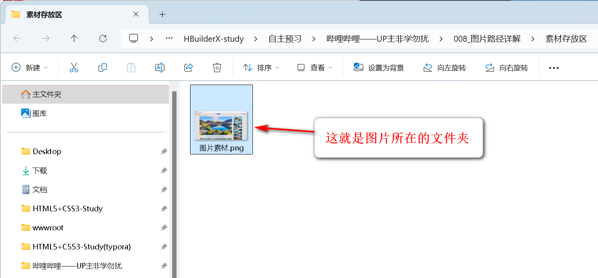
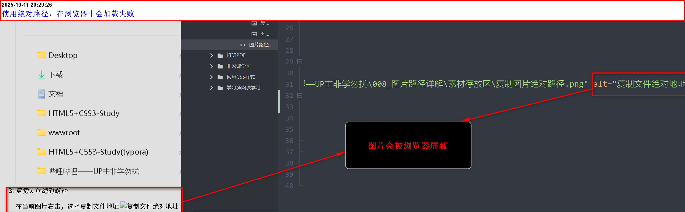
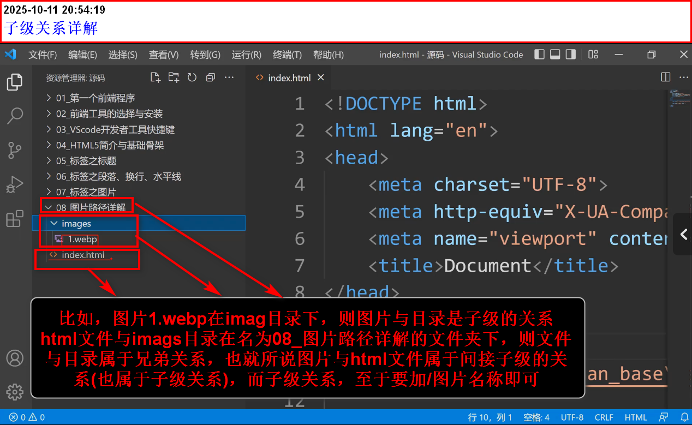
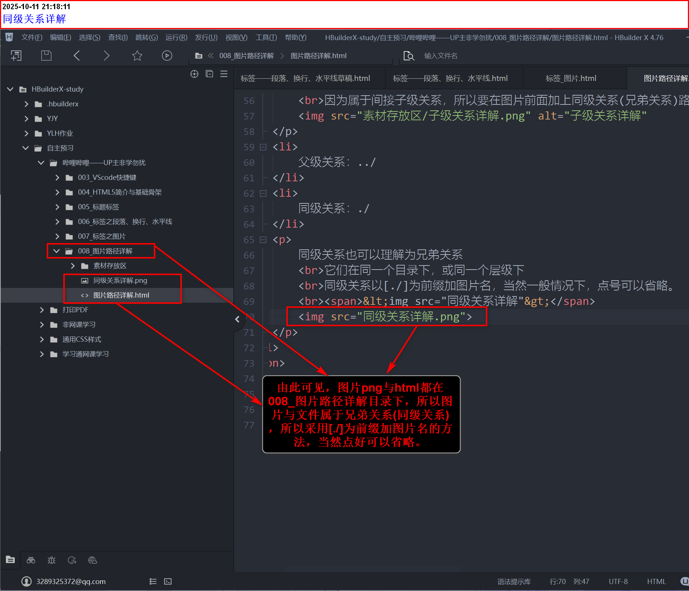
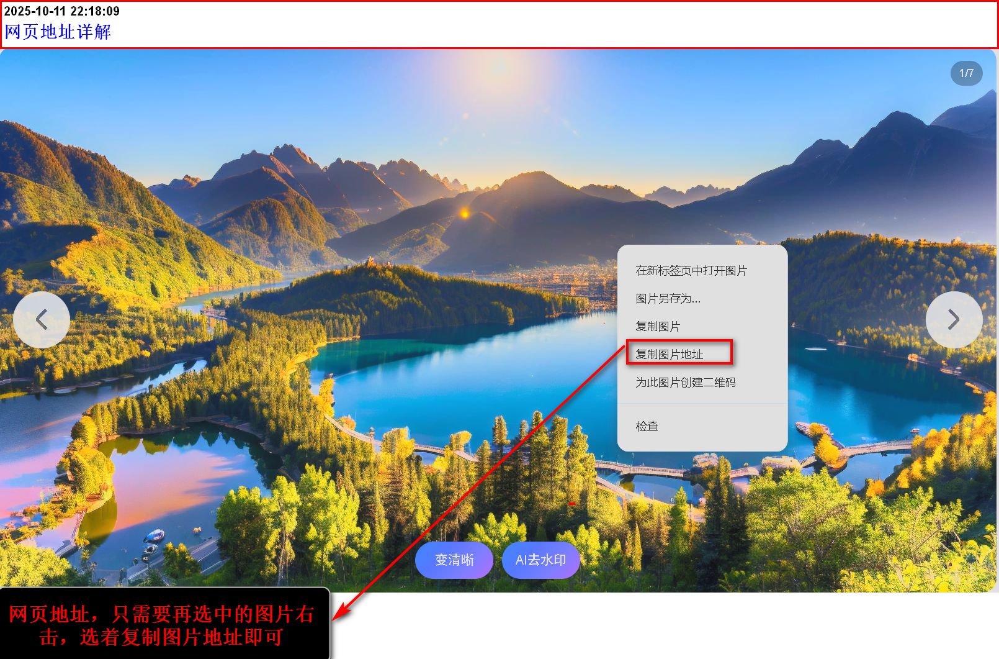

图片路径分类
- 绝对路径
- 相对路径
- 网络路径
绝对路径
绝对路径是电脑的盘符储存与访问的具体地址
整个复制绝对路径的过程
- 谁便到网上下载图片素材或本地磁盘上有图片
- 打开图片所在的文件夹 
- 复制文件绝对路径

在当前图片右击，选择复制文件地址
 注意：
注意：
在浏览器中，如果直接用绝对地址，图片会被屏蔽
因为：浏览器不认本地盘符路径，这是浏览器安全策略，无法绕过。
则：
相对路径
顾名思义：两者是相对关系(两个文件或资源位于同一个文件夹内)，两者在同一路径下可以直接访问
也就说，它不会像绝对路径，被浏览器拦截，显示不出来
- 子级关系：/
- 父级关系：../
- 同级关系：./
相对路径的三种关系
比如，图片1.webp在imag目录下，则图片与目录是子级的关系
html文件与imags目录在名为08_图片路径详解的文件夹下，则文件与目录属于兄弟关系
也就所说图片与html文件属于间接子级的关系(也属于子级关系)，
而子级关系，只要[/](图片名称即可)
<img src="素材存放区/子级关系详解.png" alt="子级关系详解">
因为属于间接子级关系，所以要在图片前面加上同级关系(兄弟关系)路径

如图所示，新建一个文件存放区的目录并将html文件拖入当中，这是文件html为目录的子级，
想要引用图片[父级关系详解.png]，则需要返回上一级，这就需要[../]返回上一级目录了，可以直接输入图片名称即可
父级关系：一个文件或文件夹所在的上一级目录
父级关系以[../]为前缀，不可省略
反正，需要使用../返回上级的就是父级关系
<img src="../008_图片路径详解/父级关系详解.png">
同级关系也可以理解为兄弟关系
它们在同一个目录下，或同一个层级下
同级关系以[./]为前缀加图片名，当然一般情况下，点号可以省略。
<img src="同级关系详解">

网络地址
顾名思义：就是复制网页的图片，从而获得地址。

网页地址问题
网页的图片地址不是100%能成功的，我到网上找了一些失败的原因，我是换了好几张图成功的。图片链接失效：之前的图片链接可能已经失效，或者图片已经被删除或移动。
2. 跨域问题：之前的图片托管在不同的域名下，浏览器可能因为CORS（跨域资源共享）问题而阻止加载。
3. 浏览器缓存问题：浏览器缓存可能导致加载旧的或错误的资源。
4. 图片格式问题：之前的图片格式可能不被浏览器支持。
5. 网络问题：之前的图片服务器可能存在问题，导致图片无法加载